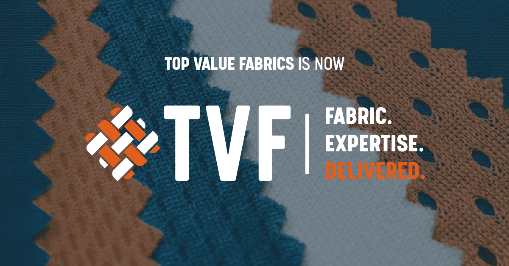

Top Value Fabrics X Purdue
Freight Forecasting & Risk Intelligence
TVF, a leading textile distributor, struggled with freight cost volatility, fragmented ERP data, and limited visibility into global disruptions. Our team developed a regression-based forecasting model enriched with macroeconomic indicators like Brent Crude, BDI, and DXY.
A Power BI dashboard integrated live port congestion news and mapped high-volume lanes via ArcGIS and Sankey visualizations. Additionally, a Python-based tool tracked freight trends using moving averages and Z-scores to surface insights from financial indicators, all through a single decision intelligence framework.